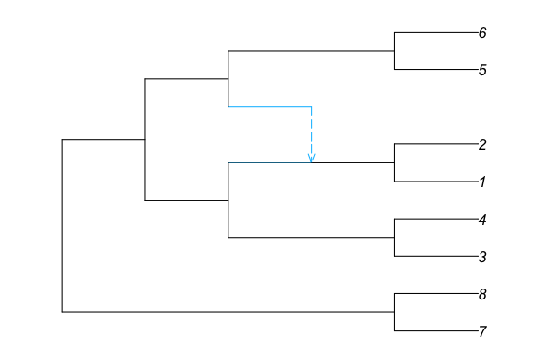

Input and output
phylo_diamond takes either a file of gene trees or a table of concordance factors (CFs), and returns the m networks that fit the data best.
phylo_diamond(gene_trees_filename::String, m::Int, output_filename::String = "phylo_diamond.txt")
phylo_diamond(cf::DataFrame, m::Int, output_filename::String = "phylo_diamond.txt")m: how many networks to report. We recommendm = 5.output_filename: the text file the report is written to (see Output).
PhyloDiamond needs at least 6 taxa.
Input 1: a file of gene trees
A text file with one gene tree per line, in newick format. Taxon names can be any text, but they must be the same across gene trees. Branch lengths and support values are allowed but not used: PhyloDiamond only uses each gene tree's unrooted topology. PhyloDiamond counts, for every set of 4 taxa, how often each of the three quartet topologies appears in the gene trees.
using PhyloDiamond
res = phylo_diamond("genetrees.tre", 5)Input 2: a table of concordance factors
Use this if you already have CFs, for example from gene trees with uncertainty taken into account, or from another program.
The table must be a DataFrame with 7 columns, in this order:
| columns 1–4 | column 5 | column 6 | column 7 |
|---|---|---|---|
taxa a, b, c, d | CF of ab|cd | CF of ac|bd | CF of ad|bc |
- PhyloDiamond uses the columns by position, not by name.
- The table must have a row for every set of 4 taxa: with $n$ taxa, $\binom{n}{4}$ rows. Otherwise
phylo_diamondstops with the error "Please provide a complete cf table".
To see the format, here is the table that PhyloDiamond builds from the example gene trees:
using PhyloDiamond
genetrees = joinpath(pkgdir(PhyloDiamond), "test", "file", "gt.txt")
df = generate_cf_from_gene_trees(genetrees)
first(df, 3)| Row | t1 | t2 | t3 | t4 | CF12_34 | CF13_24 | CF14_23 |
|---|---|---|---|---|---|---|---|
| String | String | String | String | Float64 | Float64 | Float64 | |
| 1 | 1 | 2 | 3 | 4 | 0.99 | 0.01 | 0.0 |
| 2 | 1 | 2 | 3 | 5 | 0.81 | 0.09 | 0.1 |
| 3 | 1 | 2 | 4 | 5 | 0.81 | 0.09 | 0.1 |
Running phylo_diamond(df, 5) on this table gives the same result as phylo_diamond(genetrees, 5). Building the table once is useful when you want to run PhyloDiamond several times on the same data.
To read a table saved as a CSV file:
using CSV, DataFrames
df = DataFrame(CSV.File("CFtable.csv"))
df = df[:, [:t1, :t2, :t3, :t4, :CF12_34, :CF13_24, :CF14_23]] # keep the 7 columns, in this order
res = phylo_diamond(df, 5)Change the column names to match your file. A CF table written by PhyloNetworks or SNaQ uses the column names above.
Output
phylo_diamond gives its result in three ways.
1. A printed report, for example:
Inference of top 5 8-taxon phylogenetic networks with phylogenetic invariants
1. N2222 (0.03689157145883046)
[(1,2),(3,4),(5,6),(7,8)]
((7:1,8:1):4, (((3:1,4:1):2, ((1:1,2:1):1)#H1:1::0.7):1, (#H1:1::0.3,(5:1,6:1):2):1):1);
2. N2222 (0.03823994257144703)
[(1,2),(5,6),(3,4),(7,8)]
((7:1,8:1):4, (((5:1,6:1):2, ((1:1,2:1):1)#H1:1::0.7):1, (#H1:1::0.3,(3:1,4:1):2):1):1);
...Each network takes three lines:
- its rank, its type and its score.
N2222gives the number of taxa in the cladesn0,n1,n2,n3. A smaller score means the data fit that network better. Networks with the same score get the same rank; - the taxa in
n0(hybrid clade),n1andn2(parent clades), andn3(the rest); - the network in extended newick format.
2. The same report in a text file, output_filename (phylo_diamond.txt by default). If the file already exists, the new report is added at the end: use a new file name for each analysis, or delete the old file first.
3. A dictionary from rank to newick string:
res[1] # newick string of the best networkKeys run from 1 to m. A Dict is unordered, so print res[1], res[2], ... rather than res itself to see the networks in rank order.
What the newick string does and does not tell you
The newick string is a convenient way to plot the network or use it in other programs. Only its clades are estimated. The branch lengths (1, 2, 4) and inheritance probabilities (0.7, 0.3) are always the same placeholders. Clades with 3 or more taxa are written as polytomies, for example (7:1,8:1,9:1): PhyloDiamond does not resolve relationships inside a clade.
To plot a network, use PhyloNetworks and PhyloPlots:
using PhyloNetworks, PhyloPlots
net = readnewick(res[1])
plot(net)
To estimate branch lengths and inheritance probabilities for the best network, you can use it as a starting network in SNaQ.
More than 8 taxa
With 6 to 8 taxa, PhyloDiamond scores every possible network (1080 for 6 taxa and 2520 for 7 or 8 taxa). With more than 8 taxa, it scores every network on every subset of 8 taxa, and then adds the remaining taxa to the clades of the best networks. Running time grows with the number of 8-taxon subsets, $\binom{n}{8}$. For example, there are 9 subsets for 9 taxa and 125,970 for 20 taxa.